library(ggplot2)
library(magrittr)
library(dplyr)6 Regresión
La regresión es una técnica estadística que nos permite entender y modelar la relación entre una variable dependiente (o de respuesta) y una o más variables independientes (o predictoras). En términos simples, nos ayuda a prever cómo cambia la variable dependiente cuando las variables independientes cambian.
En el contexto de nuestro dataset de Instagram, la regresión puede ser extremadamente útil para:
Predecir el número de seguidores: Basándonos en variables como el número de publicaciones, la cantidad de personas a las que sigue una cuenta, la longitud de la descripción, etc. Identificar cuentas falsas: Determinando si ciertos patrones en los datos se asocian con cuentas falsas. Analizar la influencia de la privacidad: Evaluar cómo la privacidad de una cuenta afecta el número de seguidores o seguidos. Análisis de Regresión Vamos a realizar diversos análisis de regresión para explorar nuestro dataset y obtener insights valiosos.
dataset <- read.csv("datasets/train.csv")
attach(dataset)6.1 Primeros pasos
Para las técnicas de regresión es importante que todas nuestras variables sean numéricas. No podemos hacer un ajuste con carácteres. Si fuese el caso, podríamos hacer de nuevo un trabajo de pre-processing, pero por suerte:
str(dataset)'data.frame': 576 obs. of 12 variables:
$ profile.pic : int 1 1 1 1 1 1 1 1 1 1 ...
$ nums.length.username: num 0.27 0 0.1 0 0 0 0 0 0 0 ...
$ fullname.words : int 0 2 2 1 2 4 2 2 0 2 ...
$ nums.length.fullname: num 0 0 0 0 0 0 0 0 0 0 ...
$ name..username : int 0 0 0 0 0 0 0 0 0 0 ...
$ description.length : int 53 44 0 82 0 81 50 0 71 40 ...
$ external.URL : int 0 0 0 0 0 1 0 0 0 1 ...
$ private : int 0 0 1 0 1 0 0 0 0 0 ...
$ X.posts : int 32 286 13 679 6 344 16 33 72 213 ...
$ X.followers : int 1000 2740 159 414 151 669987 122 1078 1824 12945 ...
$ X.follows : int 955 533 98 651 126 150 177 76 2713 813 ...
$ fake : int 0 0 0 0 0 0 0 0 0 0 ...¡Nuestro dataset tiene todas las variables númericas! Probablemente con regresión tengamos más juego que con FCA.
Aunque no todo es bueno. La variable que queremos predecir, fake, es una variable binaria, y la regresión no es lo más ideal para predecir exactamente entre dos valores.
Vamos a intentar sacar el mayor conocimiento de nuestros datos y encontrar ajustes interesantes.
6.2 Primeras regresiones
Aunque lo que queremos es predecir la variable “fake”, es bueno antes de comenzar ver relaciones entre otras variables, y particularmente que variables se relacionan más con fake.
En el análisis exploratorio, construimos una tabla que nos proporcionaba las mayores relaciones entre variables. Vamos a recuperar dicha tabla:
threshold <- 0.4
cor_table <- data.frame(as.table(cor(dataset))) %>%
rename(Correlation = Freq)
variables <- colnames(dataset)
n_variables <- length(dataset)
# Para que no haya repeticiones simétricas, vamos a poner la restricción de que el
# orden léxicográfico de una variable sea mayor (o menor) que la otra.
# Con un != no valdría porque habría valores filas simétricas
cor_table %>%
filter(as.character(Var1) > as.character(Var2) & abs(Correlation) > threshold) %>%
arrange(desc(abs(Correlation))) Var1 Var2 Correlation
1 profile.pic fake -0.6373153
2 nums.length.username fake 0.5876865
3 external.URL description.length 0.4823131
4 fake description.length -0.4608246
5 nums.length.username nums.length.fullname 0.4085665Vemos que la mayor correlación (aunque inversa, pero eso no nos importa, lo importante es que hay relación para la regresión). El problema con el que nos encontraremos más adelante, es que estas variables son binarias.
Podemos ir intuyendo que si queremos ajustar una variable a partir de una variable binaria, como dicha variable solo puede tomar dos valores, por muy complejo que sea el ajuste, solo hay dos posibles resultados. Como la variable que también queremos predecir es binaria, solo nos queda asignar un valor de la variable usada en el ajuste para un valor de la variable fake, pero obviamente esto no es un buen modelo.
Vamos a intentar hacer una regresión simple entre estas dos variables.
modelo1 <- lm(fake ~ profile.pic, data = dataset)
summary(modelo1)
Call:
lm(formula = fake ~ profile.pic, data = dataset)
Residuals:
Min 1Q Median 3Q Max
-0.98837 -0.29208 -0.14023 0.01163 0.70792
Coefficients:
Estimate Std. Error t value Pr(>|t|)
(Intercept) 0.98837 0.02943 33.58 <2e-16 ***
profile.pic -0.69629 0.03514 -19.81 <2e-16 ***
---
Signif. codes: 0 '***' 0.001 '**' 0.01 '*' 0.05 '.' 0.1 ' ' 1
Residual standard error: 0.386 on 574 degrees of freedom
Multiple R-squared: 0.4062, Adjusted R-squared: 0.4051
F-statistic: 392.6 on 1 and 574 DF, p-value: < 2.2e-16Obtenemos un 0.40 de R^2 ajustado, lo que no está tan mal para la simplicidad del modelo.
Los únicos dos valores que puede dar como predicción nuestro modelo son:
unique(predict(modelo1))[1] 0.2920792 0.9883721A nosotros nos interesa un valor de 0 o un valor 1, así que podemos decir que el 0.29 es 0, por cercanía, y el 0.98 es 1. Construyamos una tabla:
predicciones <- predict(modelo1)
predicciones_binarizado <- ifelse(predicciones < 0.3, 0, 1)
tabla <- data.frame(profile.pic=dataset$profile.pic,
fake=dataset$fake,
prediccion=predicciones,
prediccion_bin=predicciones_binarizado)
head(tabla, 10) profile.pic fake prediccion prediccion_bin
1 1 0 0.2920792 0
2 1 0 0.2920792 0
3 1 0 0.2920792 0
4 1 0 0.2920792 0
5 1 0 0.2920792 0
6 1 0 0.2920792 0
7 1 0 0.2920792 0
8 1 0 0.2920792 0
9 1 0 0.2920792 0
10 1 0 0.2920792 0Si observamos lo que está pasando, es que nuestro modelo de regresión (junto a la binarización), para las cuentas con foto, predice que no es falsa, y para las cuentas sin foto, predice que es falsa.
Vamos a calcular el % de aciertos asumiendo lo anterior:
total <- nrow(dataset)
aciertos <- sum(predicciones_binarizado == dataset$fake)
paste0("Hemos obtenido un ", round(100*aciertos/total,2), "% de aciertos")[1] "Hemos obtenido un 79.17% de aciertos"Parece un buen resultado, ¿verdad? Pues casi un 80% de aciertos es un buen modelo… ¿no?
Debemos tener en cuenta que nuestro dataset es pequeño, y que queremos un modelo riguroso, no podemos basarnos en una sola característica para predecir si una cuenta de Instagram es falsa.
Si concluyesemos que el modelo anterior es muy bueno, nuestro predictor se basaría simplemente en tener foto de perfil o no. Es demasiado básico. El porcentaje de aciertos viene de que en nuestro dataset esto es un patrón que suele aparecer, pero quizá si el dataset fuese mas grande, no aparecería:
casualidades <- sum(dataset$profile.pic == !dataset$fake)
round(100 * casualidades / total, 2)[1] 79.17De ahí viene el porcentaje de aciertos.
Y aunque el patrón siguiese dándose en un dataset más grande, es un modelo demasiado simple, no podemos ir a alguien y decirle si su cuenta es falsa o no simplemente por si tiene foto de perfil.
Ya que es un ajuste bidimensional, pero si lo visualizamos, para que veamos que esto por si solo no es algo muy útil:
ggplot(dataset, aes(x = profile.pic, y = fake, color="red")) +
geom_point() +
geom_line(y = predicciones, color ="blue") +
labs(title = "Regresión lineal de fake sobre profile.pic",
x = "profile.pic",
y = "fake") +
theme_minimal() 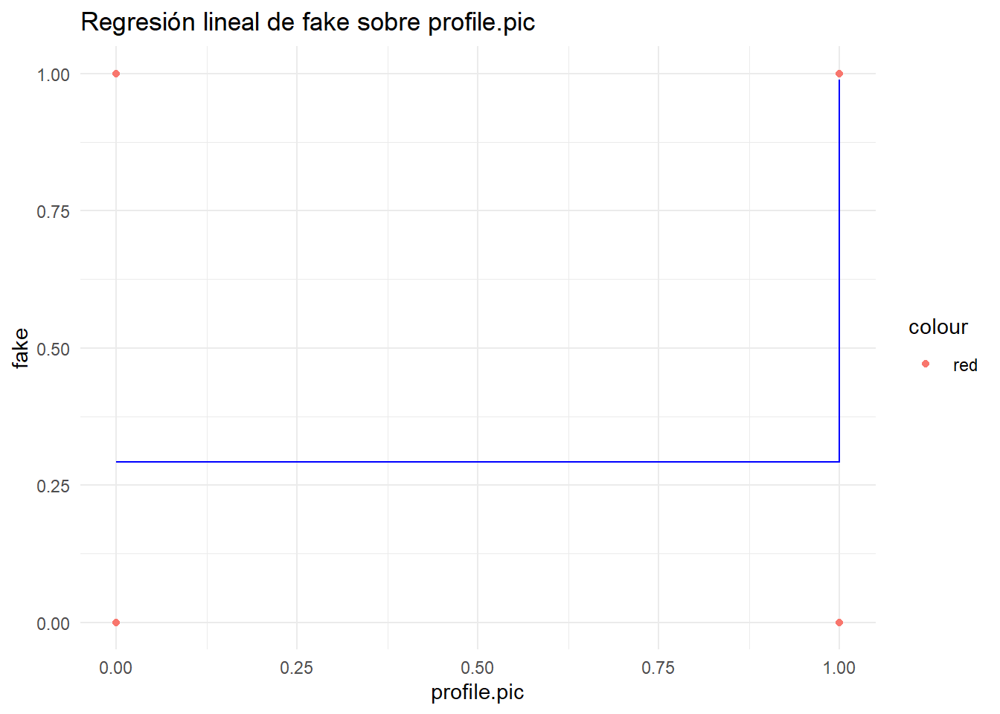
La función lineal que nos ha creado el modelo es (donde Y es fake y X es profile.pic):
paste0("y = ", modelo1$coefficients[2], "x + ", modelo1$coefficients[1])[1] "y = -0.696292885102468x + 0.988372093023256"6.3 Preparando el terreno
Ya hemos visto que predecir usando únicamente variables binarizadas no es una gran opción. También hemos visto, que dado que queremos ajustar una variable binaria (fake), los resultados que queremos son 0 o 1.
Por lo que vamos a crear una serie de funciones con las que podamos binarizar nuestros resultados para probar nuestras predicciones, y también calcular valores estadísticos del modelo teniendo en cuenta esta binarización:
- Función binarize.predictions Simplemente dado el conjunto de predicciones, las binariza usando cierto threshold, que por defecto será 0.5:
binarize.predictions <- function(predictions, threshold=0.5) {
ifelse(predictions < 0.5, 0, 1)
}- Función aciertos.binarized Calcula el porcentaje de aciertos para nuestro dataset, binarizando los resultados
aciertos.binarized <- function(predictions, real, threshold=0.5) {
total <- length(real)
aciertos <- sum(binarize.predictions(predictions) == real)
100 * aciertos / total
}- Función rss.binarized Calcula el RSS con las predicciones binarizadas
rss.binarized <- function(model, real, threshold=0.5) {
sum((real - binarize.predictions(predict(model), threshold))^2)
}- Función rsquared.binarized Calcula el parámetro R^2 del modelo, pero usando las predicciones binarizadas (ya que el R^2 que nos proporciona summary, se realiza con los valores sin binarizar, y es un valor diferente)
rsquared.binarized <- function(model, real, threshold=0.5) {
rss <- rss.binarized(model, real, threshold)
tss <- sum((real - mean(real))^2)
1 - (rss/tss)
}- Función rse.binarized Lo mismo que con rsquared.binarized, pero para calcular RSE (residual standar error):
rse.binarized <- function(model, real, threshold=0.5) {
rss <- rss.binarized(model, real, threshold)
n <- length(real)
rse <- sqrt((1/(n-2))*rss)
return(rse)
}- Función fstatistic.binarized Calcula el F-statistic para las predicciones binarizadas:
fstatistic.binarized <- function(model, real) {
tss <- sum((real - mean(real))^2)
rss <- rss.binarized(model, real, threshold)
p <- length(model$coefficients) - 1
n <- length(real)
((tss - rss) / p) / (rss / (n - p - 1))
}6.4 Regresiones previas
Vamos a intentar ahora ajustar ahora algunas de las variables que no son binarias entre sí, a ver si encontramos alguna relación interesante.
Para no probar a lo loco, vamos a coger la tabla del principio pero esta vez la vamos a construir solo con variables que no sean binarias:
unique_values <- sapply(dataset, function(x) length(unique(x)))
binary_vars <- names(which(unique_values == 2))
cor_table %>%
filter(as.character(Var1) > as.character(Var2)
& !(Var1 %in% binary_vars)
& !(Var2 %in% binary_vars)) %>%
arrange(desc(abs(Correlation))) Var1 Var2 Correlation
1 nums.length.username nums.length.fullname 0.408566542
2 X.posts X.followers 0.321385480
3 nums.length.username description.length -0.321170271
4 fullname.words description.length 0.272522165
5 X.follows description.length 0.226561422
6 nums.length.username fullname.words -0.225472125
7 X.follows nums.length.username -0.172413275
8 X.posts nums.length.username -0.157442112
9 X.posts description.length 0.144823702
10 nums.length.fullname description.length -0.117521050
11 X.posts X.follows 0.098225040
12 X.follows fullname.words 0.094854964
13 nums.length.fullname fullname.words -0.094347995
14 X.posts fullname.words 0.073350182
15 X.follows nums.length.fullname -0.067971092
16 X.followers nums.length.username -0.062785090
17 X.posts nums.length.fullname -0.057715505
18 X.followers fullname.words 0.033224604
19 X.followers nums.length.fullname -0.027034712
20 X.follows X.followers -0.011065994
21 X.followers description.length 0.005929455Vamos a probar una regresión con el primer par de variables, para explorar como jugar con los datos, y luego pasaremos a intentar predecir la variable fake en función de todo lo demás:
- Regresión entre nums.length.username y nums.length.fullname
Primero vamos a visualizar la nube de puntos:
ggplot(dataset, aes(x=nums.length.username, y=nums.length.fullname)) +
geom_point()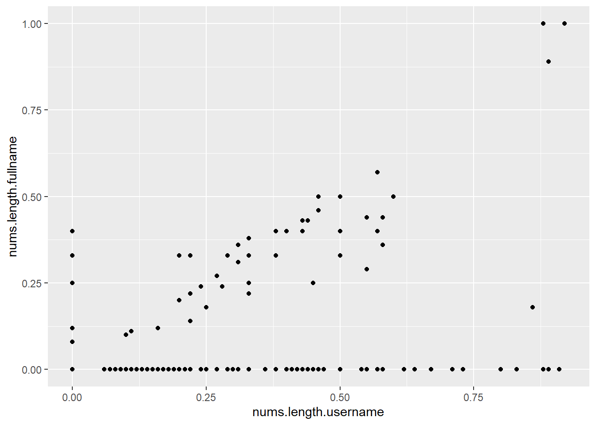
Se aprecia como hay muchos valores en nums.length.fullname = 0 (y = 0), y algunos en nums.length.username = 0 (x = 0) pero por lo demás, parece haber una clara tendencia lineal alcista.
Creamos un modelo de regresión lineal, pues salvo los valores en los ejes, parece que la nube de puntos dibuja una línea:
modelo <- lm(nums.length.fullname ~ nums.length.username, data = dataset)summary(modelo)
Call:
lm(formula = nums.length.fullname ~ nums.length.username, data = dataset)
Residuals:
Min 1Q Median 3Q Max
-0.21426 -0.05667 0.00303 0.00303 0.79291
Coefficients:
Estimate Std. Error t value Pr(>|t|)
(Intercept) -0.003026 0.005999 -0.504 0.614
nums.length.username 0.238772 0.022264 10.725 <2e-16 ***
---
Signif. codes: 0 '***' 0.001 '**' 0.01 '*' 0.05 '.' 0.1 ' ' 1
Residual standard error: 0.1143 on 574 degrees of freedom
Multiple R-squared: 0.1669, Adjusted R-squared: 0.1655
F-statistic: 115 on 1 and 574 DF, p-value: < 2.2e-16El R^2 es muy malo, un 0.16. Vamos a visualizar la regresión:
Veamos los valores predichos en una tabla:
tabla <- data.frame(
nums.length.username=nums.length.username,
nums.length.fullname=nums.length.fullname,
prediccion=predict(modelo)
)
head(tabla, 10) nums.length.username nums.length.fullname prediccion
1 0.27 0 0.061442570
2 0.00 0 -0.003025925
3 0.10 0 0.020851295
4 0.00 0 -0.003025925
5 0.00 0 -0.003025925
6 0.00 0 -0.003025925
7 0.00 0 -0.003025925
8 0.00 0 -0.003025925
9 0.00 0 -0.003025925
10 0.00 0 -0.003025925ggplot(dataset, aes(x = nums.length.username, y = nums.length.fullname, color="red")) +
geom_point() +
geom_line(aes(x = nums.length.username, y = predict(modelo), color ="blue")) +
labs(title = "Regresión lineal de nums.length.fullname sobre nums.length.username",
x = "nums.length.username",
y = "nums.length.fullname") +
theme_minimal() 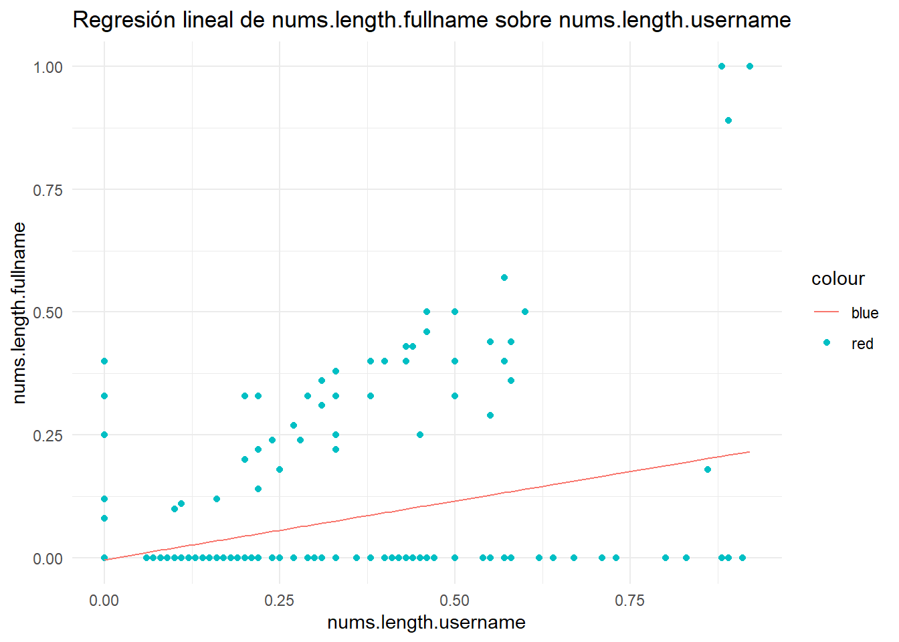
Vemos que la línea se ve influenciada altamente por los valores en los ejes. Se trata de las cuentas sin números en el nombre completo pero con números en el nombre de usuario y viceversa.
Vamos a visualizar los gráficos que nos proporciona la función plot aplicada al modelo:
plot(modelo)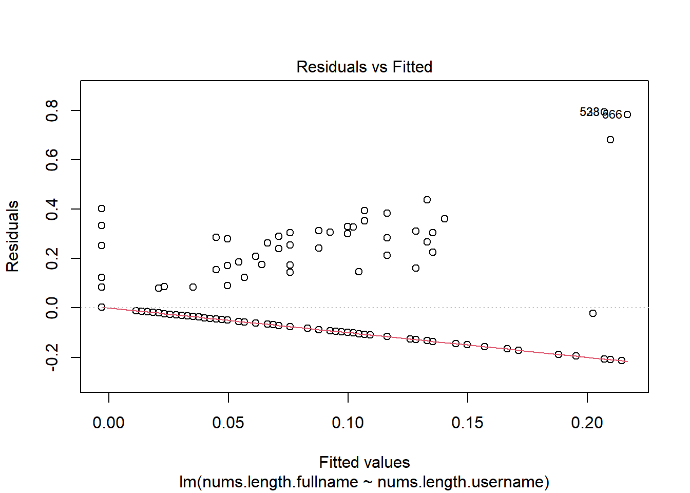

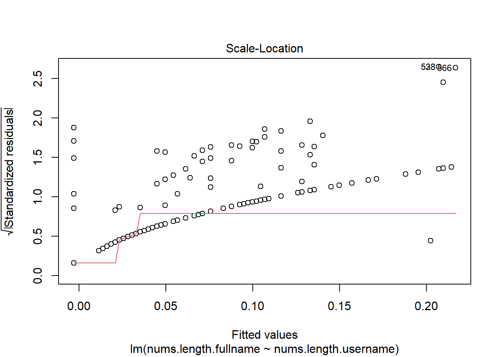
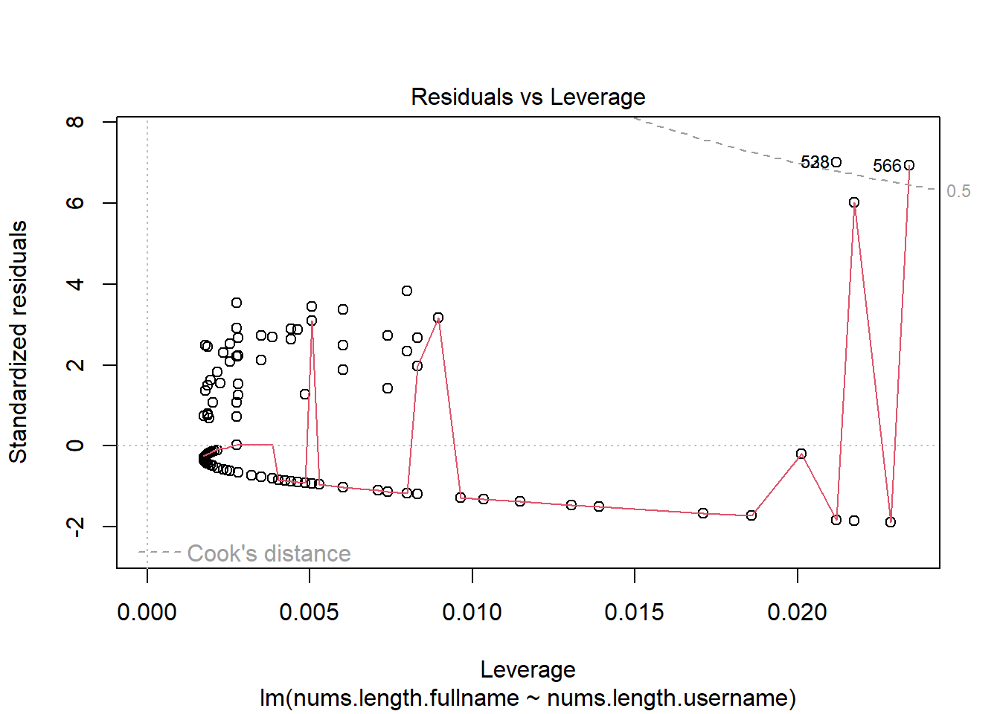
La primera gráfica es simplemente un gráfico entre los residuos y los valores predichos. Vemos que R nos marca algunos valores que están muy lejanos el gráfico, estos son outliers.
El segundo gráfico nos muestra un gráfico nos mostraría una linea reacta si los errores se distribuyesen de manera normal, lo que claramente no es el caso. Los outliers se desvian de dicha línea, y vemos que tenemos muchos valores que se desvian bastante, probablemente los valores de los ejes.
La tercera gráfica también marca outliers.
La cuarta y última muestra la distancia de Cook, que nos indica que puntos tienen una mayor influencia en la regresión. También marca los outliers.
Lo que nos recomienda lo anterior es eliminar esos valores marcados, pero vamos a eliminar todos los valores de los ejes, aunque sean bastantes, para intentar encontrar una relación entre las cuentas que tienen números en el nombre de usuario y nombre real, eliminando los que no tiene números en alguno de los.
Eliminamos outliers:
dataset_modif <- dataset %>%
filter(nums.length.username > 0 & nums.length.fullname > 0)
nrow(dataset_modif)[1] 52Nos hemos quedado prácticamente con el 9% de los datos, la mayoría no tienen números en ambos nombres.
Vamos a realizar la predicción ahora:
modelo <- lm(dataset_modif$nums.length.fullname ~ dataset_modif$nums.length.username,
data = dataset_modif)summary(modelo)
Call:
lm(formula = dataset_modif$nums.length.fullname ~ dataset_modif$nums.length.username,
data = dataset_modif)
Residuals:
Min 1Q Median 3Q Max
-0.56406 -0.04487 0.01122 0.05000 0.23932
Coefficients:
Estimate Std. Error t value Pr(>|t|)
(Intercept) 0.02932 0.03803 0.771 0.444
dataset_modif$nums.length.username 0.83109 0.08301 10.012 1.54e-13 ***
---
Signif. codes: 0 '***' 0.001 '**' 0.01 '*' 0.05 '.' 0.1 ' ' 1
Residual standard error: 0.1191 on 50 degrees of freedom
Multiple R-squared: 0.6672, Adjusted R-squared: 0.6605
F-statistic: 100.2 on 1 and 50 DF, p-value: 1.544e-13El R^2 ha subido a 0.66, pero recordamos que hemos eliminado el 91% de los datos.
Visualicemos:
data.frame(
nums.length.username=dataset_modif$nums.length.username,
nums.length.fullname=dataset_modif$nums.length.fullname,
prediccion=predict(modelo)
) nums.length.username nums.length.fullname prediccion
1 0.10 0.10 0.1124314
2 0.24 0.24 0.2287844
3 0.45 0.25 0.4033138
4 0.22 0.14 0.2121625
5 0.22 0.22 0.2121625
6 0.44 0.43 0.3950029
7 0.31 0.36 0.2869609
8 0.33 0.33 0.3035827
9 0.55 0.29 0.4864231
10 0.11 0.11 0.1207423
11 0.31 0.31 0.2869609
12 0.89 0.89 0.7689946
13 0.20 0.20 0.1955407
14 0.38 0.40 0.3451374
15 0.22 0.22 0.2121625
16 0.24 0.24 0.2287844
17 0.58 0.36 0.5113559
18 0.33 0.38 0.3035827
19 0.33 0.33 0.3035827
20 0.31 0.31 0.2869609
21 0.50 0.33 0.4448685
22 0.33 0.33 0.3035827
23 0.40 0.40 0.3617592
24 0.43 0.40 0.3866920
25 0.57 0.40 0.5030450
26 0.29 0.33 0.2703390
27 0.38 0.33 0.3451374
28 0.33 0.25 0.3035827
29 0.27 0.27 0.2537172
30 0.28 0.24 0.2620281
31 0.20 0.33 0.1955407
32 0.50 0.40 0.4448685
33 0.58 0.44 0.5113559
34 0.22 0.33 0.2121625
35 0.38 0.33 0.3451374
36 0.88 1.00 0.7606837
37 0.88 1.00 0.7606837
38 0.33 0.22 0.3035827
39 0.50 0.50 0.4448685
40 0.25 0.18 0.2370953
41 0.57 0.57 0.5030450
42 0.46 0.46 0.4116248
43 0.60 0.50 0.5279778
44 0.46 0.50 0.4116248
45 0.31 0.31 0.2869609
46 0.43 0.43 0.3866920
47 0.50 0.40 0.4448685
48 0.86 0.18 0.7440619
49 0.16 0.12 0.1622970
50 0.92 1.00 0.7939274
51 0.55 0.44 0.4864231
52 0.38 0.33 0.3451374Y visualizamos:
ggplot(dataset_modif, aes(
x = nums.length.username,
y = nums.length.fullname,
color="red")) +
geom_point() +
geom_line(aes(
x = nums.length.username,
y = predict(modelo),
color ="blue")) +
labs(title = "Regresión lineal de nums.length.fullname sobre nums.length.username",
x = "nums.length.username",
y = "nums.length.fullname") +
theme_minimal() 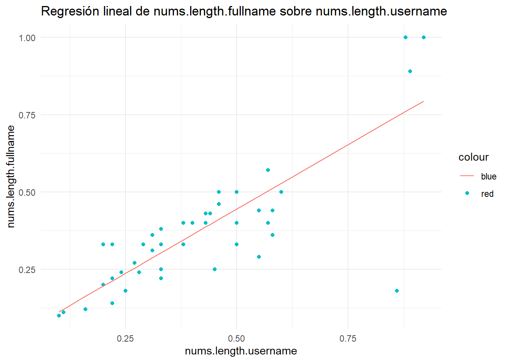
El ajuste es mucho mejor que el anterior, y eso que aún tenemos algún outlier como el que se ve abajo derecha.
Ya que hemos probado con estas dos variables estamos más que preparados para pasar a intentar predecir la variable importante, fake.
6.5 Regresión con fake
Ya hemos explorado suficiente, vamos a por lo grande.
Vamos a intentar predecir la variable fake a partir de las demás. Usando “.”, podemos ajustar la variable fake respecto a todas las demás. Veamos como queda dicho modelo.
modelo2 <- lm(fake ~ ., data = dataset)summary(modelo2)
Call:
lm(formula = fake ~ ., data = dataset)
Residuals:
Min 1Q Median 3Q Max
-0.73096 -0.23729 -0.06653 0.24048 1.01052
Coefficients:
Estimate Std. Error t value Pr(>|t|)
(Intercept) 7.931e-01 3.798e-02 20.880 < 2e-16 ***
profile.pic -4.380e-01 3.345e-02 -13.094 < 2e-16 ***
nums.length.username 8.062e-01 7.522e-02 10.718 < 2e-16 ***
fullname.words -3.354e-02 1.333e-02 -2.516 0.012142 *
nums.length.fullname -2.775e-02 1.212e-01 -0.229 0.818988
name..username 2.241e-01 7.641e-02 2.933 0.003498 **
description.length -1.510e-03 4.342e-04 -3.478 0.000544 ***
external.URL -1.542e-01 4.800e-02 -3.213 0.001390 **
private -9.459e-03 2.843e-02 -0.333 0.739459
X.posts -9.094e-05 3.570e-05 -2.547 0.011120 *
X.followers -9.960e-09 1.539e-08 -0.647 0.517743
X.follows -1.850e-05 1.499e-05 -1.235 0.217530
---
Signif. codes: 0 '***' 0.001 '**' 0.01 '*' 0.05 '.' 0.1 ' ' 1
Residual standard error: 0.3166 on 564 degrees of freedom
Multiple R-squared: 0.6074, Adjusted R-squared: 0.5998
F-statistic: 79.33 on 11 and 564 DF, p-value: < 2.2e-16Nuestro modelo tiene un 0.6 de R^2, un error residual relativamente pequeño y un f-statistic mayor de 79.33. No está nada mal.
Vamos a ver el % de aciertos usando las funciones que creamos al principio.
aciertos.binarized(predict(modelo2), fake)[1] 89.93056!Casi un 90%¡. Parece que la regresión nos está dando buenos resultados, y eso que aún no hemos intentado mejorar el modelo.
Calculemos el RSE, R^2 Y F-statistic estádisticos para nuestro modelo binarizado:
paste("RSE:", round(rse.binarized(modelo2, fake),4))[1] "RSE: 0.3179"paste("R2:", round(rsquared.binarized(modelo2, fake),4))[1] "R2: 0.5972"paste("F-statistic:", round(fstatistic.binarized(modelo2, fake),2))[1] "F-statistic: 76.03"Los valores de los estádisticos son prácticamente los mismos que para el modelo sin binarizar.
6.6 Mejorando el modelo
Si hacemos summary
summary(modelo2)
Call:
lm(formula = fake ~ ., data = dataset)
Residuals:
Min 1Q Median 3Q Max
-0.73096 -0.23729 -0.06653 0.24048 1.01052
Coefficients:
Estimate Std. Error t value Pr(>|t|)
(Intercept) 7.931e-01 3.798e-02 20.880 < 2e-16 ***
profile.pic -4.380e-01 3.345e-02 -13.094 < 2e-16 ***
nums.length.username 8.062e-01 7.522e-02 10.718 < 2e-16 ***
fullname.words -3.354e-02 1.333e-02 -2.516 0.012142 *
nums.length.fullname -2.775e-02 1.212e-01 -0.229 0.818988
name..username 2.241e-01 7.641e-02 2.933 0.003498 **
description.length -1.510e-03 4.342e-04 -3.478 0.000544 ***
external.URL -1.542e-01 4.800e-02 -3.213 0.001390 **
private -9.459e-03 2.843e-02 -0.333 0.739459
X.posts -9.094e-05 3.570e-05 -2.547 0.011120 *
X.followers -9.960e-09 1.539e-08 -0.647 0.517743
X.follows -1.850e-05 1.499e-05 -1.235 0.217530
---
Signif. codes: 0 '***' 0.001 '**' 0.01 '*' 0.05 '.' 0.1 ' ' 1
Residual standard error: 0.3166 on 564 degrees of freedom
Multiple R-squared: 0.6074, Adjusted R-squared: 0.5998
F-statistic: 79.33 on 11 and 564 DF, p-value: < 2.2e-16Vemos que tenemos varias variables con un p-value bastante alto. Estas variables añaden complejidad al modelo y no aportan nada, vamos a eliminarlas (creando un nuevo modelo sin ellas). Vamos a quedarnos con las variables que tienen un p-value menor a 0.01, es decir, profile.pic, nums.length.username, name..username, description.length y external.URL.
modelo3 <- lm(fake ~ profile.pic + nums.length.username + name..username + description.length + external.URL, data = dataset)summary(modelo3)
Call:
lm(formula = fake ~ profile.pic + nums.length.username + name..username +
description.length + external.URL, data = dataset)
Residuals:
Min 1Q Median 3Q Max
-0.71113 -0.24453 -0.07143 0.24282 0.98317
Coefficients:
Estimate Std. Error t value Pr(>|t|)
(Intercept) 0.7354681 0.0316443 23.242 < 2e-16 ***
profile.pic -0.4596554 0.0328023 -14.013 < 2e-16 ***
nums.length.username 0.8445023 0.0687052 12.292 < 2e-16 ***
name..username 0.2314540 0.0733411 3.156 0.001685 **
description.length -0.0017381 0.0004285 -4.056 5.68e-05 ***
external.URL -0.1731966 0.0477099 -3.630 0.000309 ***
---
Signif. codes: 0 '***' 0.001 '**' 0.01 '*' 0.05 '.' 0.1 ' ' 1
Residual standard error: 0.3196 on 570 degrees of freedom
Multiple R-squared: 0.5956, Adjusted R-squared: 0.592
F-statistic: 167.9 on 5 and 570 DF, p-value: < 2.2e-16Vemos que el R2 ha bajado un poco pero es prácticamente el mismo, al igual que RSE, que solo ha incrementado un poco, y sin embargo, el fstatistic ha incremetnado bastante.
Hemos conseguido unos resultados prácticamente idénticos, mejorando el fstatistic, y reduciendo considerablemente la complejidad del modelo.
aciertos.binarized(predict(modelo3), fake)[1] 89.93056Los aciertos son exactamente los mismos. Todas las variables que henmos eliminado no aportaban prácticamente nada.
Veamos los gráficos que nos proporciona plot.
plot(modelo3)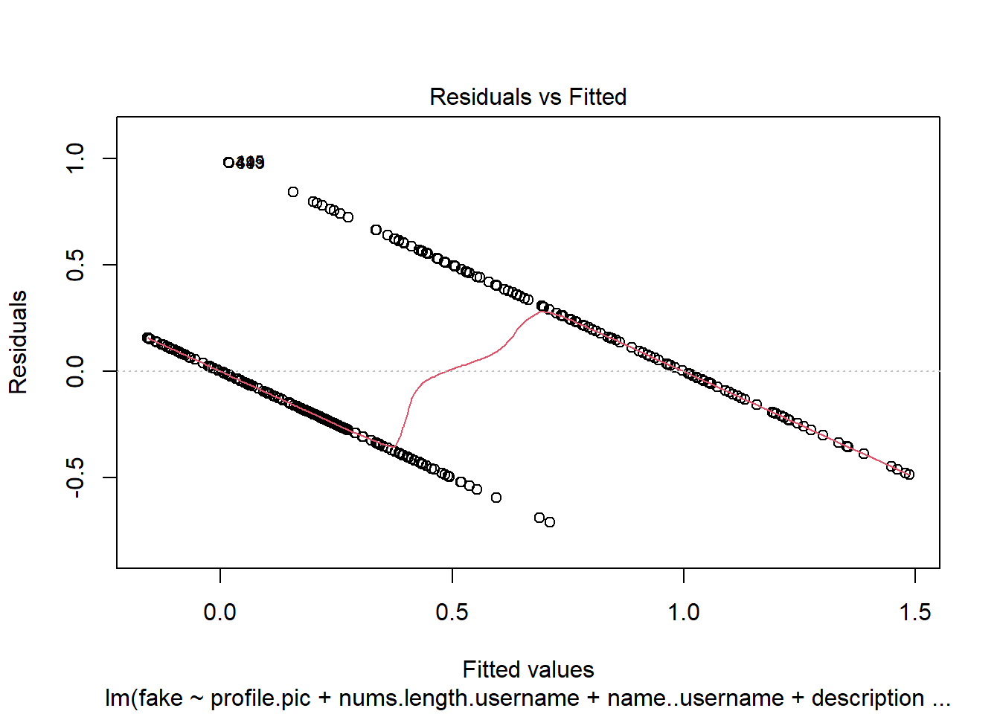
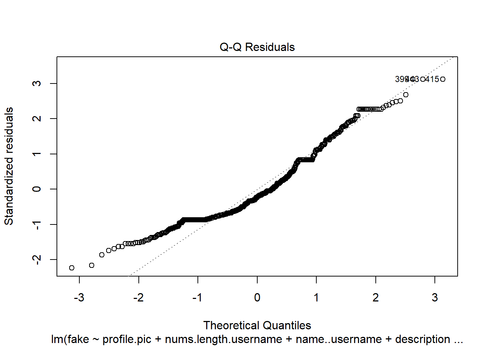
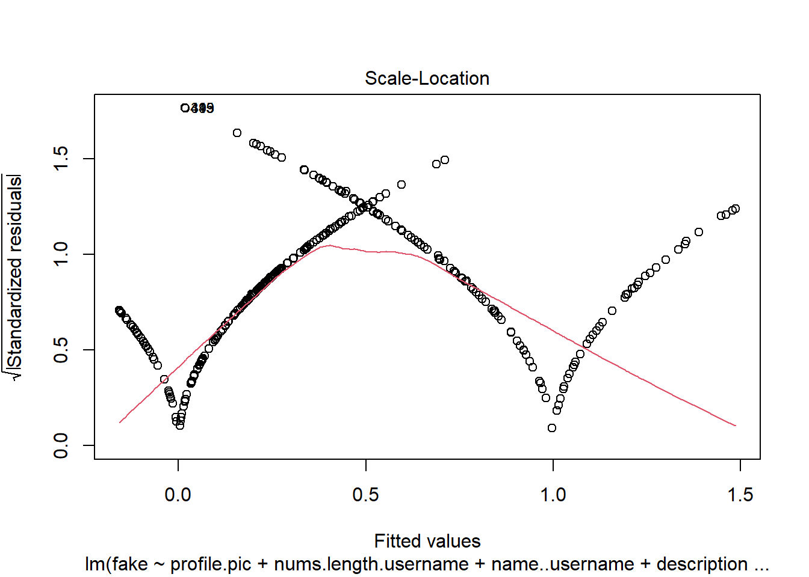
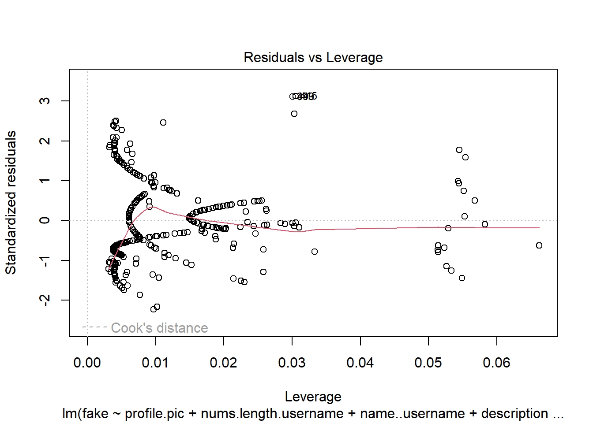
Al estar intentando predecir una variable que solo toma dos valores, los gráficos son bastante más distintos de lo normal. Podemos apreciar que hay outliers, aunque no demasiados como cuando estabamos ajustando las variables nums.length.fullname y nums.length.username.
Ahora, vamos a intentar mejorar nuestro modelo añadiendo términos no lineales. Hay ciertas variables que quizá de la forma en que se nos presenta no aportan mucho a los datos, pero aplicandole alguna transformación, pueden aportar.
Con solo términos lineales estamos ajustando un hiperplano de a nuestra nube de puntos de n dimensiones, pero con términos no lineales formamos figuras mas complejas que un hiper plano.
Vamos a añadir más términos. Para la descripción vamos a añadir términos elevados a 2, 3 y 4. Para los followers, que antes nos salía que no era una variable relevante, vamos a hacerle el logaritmo, ya que los valores crecían exponencialmente (para poder hacerle el logaritmo, tenemos que tener cuidado, pues hay valores con 0, así que simplemente sumamos 1) y por último vamos a hacerle la raíz cuadrada a X.follows.
modelo4 <- update(modelo3, . ~ . +
I(description.length^2) +
I(description.length^3) +
I(description.length^4) +
I(log(X.followers+1)) +
I(log(X.followers+1)^2) +
I(log(X.followers+1)^3) +
I(log(X.followers+1)^4) +
I(log(X.followers+1)^2) +
I(X.follows^0.5))Son términos “extraños” que nos hemos inventado, y como vamos a ver ahora, han provocado un ajuste bueno, pero hay que tener cuidado. Podríamos añadir todas las variables que queramos con todas las modificaciones que queramos, pero esto puede provocar un sobreajuste (overfitting).
El sobreajuste ocurre cuando entrenamos el modelo de forma que se adapta demasiado a los datos, sin tener ese grado de generalización que es lo que nos permite que dados nuevos datos, el modelo funcione correctamente.
De hecho, este último modelo, tiene cierto grado de sobreajuste, ya que hemos añadido variables que se adaptan demasiado a los datos.
Vamos a visualizar los estadísticos:
summary(modelo4)
Call:
lm(formula = fake ~ profile.pic + nums.length.username + name..username +
description.length + external.URL + I(description.length^2) +
I(description.length^3) + I(description.length^4) + I(log(X.followers +
1)) + I(log(X.followers + 1)^2) + I(log(X.followers + 1)^3) +
I(log(X.followers + 1)^4) + I(X.follows^0.5), data = dataset)
Residuals:
Min 1Q Median 3Q Max
-0.70473 -0.18094 -0.02418 0.14988 0.82024
Coefficients:
Estimate Std. Error t value Pr(>|t|)
(Intercept) 8.893e-01 5.802e-02 15.327 < 2e-16 ***
profile.pic -2.612e-01 3.073e-02 -8.498 < 2e-16 ***
nums.length.username 5.798e-01 6.141e-02 9.442 < 2e-16 ***
name..username 1.179e-01 6.220e-02 1.896 0.05847 .
description.length -1.087e-02 3.774e-03 -2.879 0.00415 **
external.URL -6.688e-02 4.343e-02 -1.540 0.12412
I(description.length^2) 2.864e-04 1.386e-04 2.067 0.03923 *
I(description.length^3) -3.118e-06 1.616e-06 -1.929 0.05425 .
I(description.length^4) 1.150e-08 5.832e-09 1.972 0.04916 *
I(log(X.followers + 1)) 1.934e-01 4.927e-02 3.925 9.73e-05 ***
I(log(X.followers + 1)^2) -9.358e-02 1.450e-02 -6.455 2.33e-10 ***
I(log(X.followers + 1)^3) 9.707e-03 1.493e-03 6.501 1.76e-10 ***
I(log(X.followers + 1)^4) -2.979e-04 4.920e-05 -6.054 2.59e-09 ***
I(X.follows^0.5) 4.795e-03 1.105e-03 4.341 1.68e-05 ***
---
Signif. codes: 0 '***' 0.001 '**' 0.01 '*' 0.05 '.' 0.1 ' ' 1
Residual standard error: 0.2678 on 562 degrees of freedom
Multiple R-squared: 0.72, Adjusted R-squared: 0.7136
F-statistic: 111.2 on 13 and 562 DF, p-value: < 2.2e-16Hemos obtenido un error residual de 0.26, un R^2 de 0.72 y un R^2 ajustado de 0.7136 (bastante cercano a 0.72, lo que indica que no tenemos mucha complejidad innecesaria, aunque). Vemos que el F-statistic si ha disminuido, a 111.2, aunque sigue siendo bastante alto.
Veamos el porcentaje de aciertos:
aciertos <- aciertos.binarized(predict(modelo4), fake)
paste0("Hemos obtenido un ", round(aciertos, 2), "% de aciertos")[1] "Hemos obtenido un 93.92% de aciertos"Casi un 94%, nada mal, pero recordemos que estos son los mismos datos con los que hemos creado el modelo.
Vamos a ver los estadísticos binarizados:
paste("RSE:", round(rse.binarized(modelo4, fake),4))[1] "RSE: 0.2469"paste("R2:", round(rsquared.binarized(modelo4, fake),4))[1] "R2: 0.7569"paste("F-statistic:", round(fstatistic.binarized(modelo4, fake),2))[1] "F-statistic: 134.63"Son incluso mejores, y eso que estos son los reales, ya que como explicamos, nos interesan los datos binarizados, no la predicción que es resultado directo de la regresión. Parece ser que hemos encontrado un buen modelo a pesar de que nuestra predicción es binaria.
Vamos a pasar a la última fase, probar nuestros modelos.
6.7 Modelos finales
A modo de resumen, estos son los 4 modelos con los que nos hemos quedado (que predicen la variable fake) y a los que les haremos pruebas:
- modelo1
Modelo de regresión lineal básico que simplemente usaba para predecir fake, la variable binaria profile.pic:
summary(modelo1)
Call:
lm(formula = fake ~ profile.pic, data = dataset)
Residuals:
Min 1Q Median 3Q Max
-0.98837 -0.29208 -0.14023 0.01163 0.70792
Coefficients:
Estimate Std. Error t value Pr(>|t|)
(Intercept) 0.98837 0.02943 33.58 <2e-16 ***
profile.pic -0.69629 0.03514 -19.81 <2e-16 ***
---
Signif. codes: 0 '***' 0.001 '**' 0.01 '*' 0.05 '.' 0.1 ' ' 1
Residual standard error: 0.386 on 574 degrees of freedom
Multiple R-squared: 0.4062, Adjusted R-squared: 0.4051
F-statistic: 392.6 on 1 and 574 DF, p-value: < 2.2e-16Estadísticos con la binarización de los resultados:
paste("RSE:", round(rse.binarized(modelo1, fake),4))[1] "RSE: 0.4572"paste("R2:", round(rsquared.binarized(modelo1, fake),4))[1] "R2: 0.1667"paste("F-statistic:", round(fstatistic.binarized(modelo1, fake),2))[1] "F-statistic: 114.8"- modelo2
Modelo de regresión generalizado usando todas las variables del dataset, al que no se le ha hecho ningún estudio ni ninguna merjora:
summary(modelo2)
Call:
lm(formula = fake ~ ., data = dataset)
Residuals:
Min 1Q Median 3Q Max
-0.73096 -0.23729 -0.06653 0.24048 1.01052
Coefficients:
Estimate Std. Error t value Pr(>|t|)
(Intercept) 7.931e-01 3.798e-02 20.880 < 2e-16 ***
profile.pic -4.380e-01 3.345e-02 -13.094 < 2e-16 ***
nums.length.username 8.062e-01 7.522e-02 10.718 < 2e-16 ***
fullname.words -3.354e-02 1.333e-02 -2.516 0.012142 *
nums.length.fullname -2.775e-02 1.212e-01 -0.229 0.818988
name..username 2.241e-01 7.641e-02 2.933 0.003498 **
description.length -1.510e-03 4.342e-04 -3.478 0.000544 ***
external.URL -1.542e-01 4.800e-02 -3.213 0.001390 **
private -9.459e-03 2.843e-02 -0.333 0.739459
X.posts -9.094e-05 3.570e-05 -2.547 0.011120 *
X.followers -9.960e-09 1.539e-08 -0.647 0.517743
X.follows -1.850e-05 1.499e-05 -1.235 0.217530
---
Signif. codes: 0 '***' 0.001 '**' 0.01 '*' 0.05 '.' 0.1 ' ' 1
Residual standard error: 0.3166 on 564 degrees of freedom
Multiple R-squared: 0.6074, Adjusted R-squared: 0.5998
F-statistic: 79.33 on 11 and 564 DF, p-value: < 2.2e-16Estadísticos con la binarización de los resultados:
paste("RSE:", round(rse.binarized(modelo2, fake),4))[1] "RSE: 0.3179"paste("R2:", round(rsquared.binarized(modelo2, fake),4))[1] "R2: 0.5972"paste("F-statistic:", round(fstatistic.binarized(modelo2, fake),2))[1] "F-statistic: 76.03"- modelo3
Es el modelo2 pero eliminando todas las variables que solo aportaban complejidad al modelo y prácticamente nada de información:
summary(modelo3)
Call:
lm(formula = fake ~ profile.pic + nums.length.username + name..username +
description.length + external.URL, data = dataset)
Residuals:
Min 1Q Median 3Q Max
-0.71113 -0.24453 -0.07143 0.24282 0.98317
Coefficients:
Estimate Std. Error t value Pr(>|t|)
(Intercept) 0.7354681 0.0316443 23.242 < 2e-16 ***
profile.pic -0.4596554 0.0328023 -14.013 < 2e-16 ***
nums.length.username 0.8445023 0.0687052 12.292 < 2e-16 ***
name..username 0.2314540 0.0733411 3.156 0.001685 **
description.length -0.0017381 0.0004285 -4.056 5.68e-05 ***
external.URL -0.1731966 0.0477099 -3.630 0.000309 ***
---
Signif. codes: 0 '***' 0.001 '**' 0.01 '*' 0.05 '.' 0.1 ' ' 1
Residual standard error: 0.3196 on 570 degrees of freedom
Multiple R-squared: 0.5956, Adjusted R-squared: 0.592
F-statistic: 167.9 on 5 and 570 DF, p-value: < 2.2e-16Estadísticos con la binarización de los resultados:
paste("RSE:", round(rse.binarized(modelo3, fake),4))[1] "RSE: 0.3179"paste("R2:", round(rsquared.binarized(modelo3, fake),4))[1] "R2: 0.5972"paste("F-statistic:", round(fstatistic.binarized(modelo3, fake),2))[1] "F-statistic: 169.03"- modelo4
Modelo de regresión generalizado no lineal. Resultado de añadir varaibles con logaritmos, exponentes y raices al modelo3.
summary(modelo1)
Call:
lm(formula = fake ~ profile.pic, data = dataset)
Residuals:
Min 1Q Median 3Q Max
-0.98837 -0.29208 -0.14023 0.01163 0.70792
Coefficients:
Estimate Std. Error t value Pr(>|t|)
(Intercept) 0.98837 0.02943 33.58 <2e-16 ***
profile.pic -0.69629 0.03514 -19.81 <2e-16 ***
---
Signif. codes: 0 '***' 0.001 '**' 0.01 '*' 0.05 '.' 0.1 ' ' 1
Residual standard error: 0.386 on 574 degrees of freedom
Multiple R-squared: 0.4062, Adjusted R-squared: 0.4051
F-statistic: 392.6 on 1 and 574 DF, p-value: < 2.2e-16Estadísticos con la binarización de los resultados:
paste("RSE:", round(rse.binarized(modelo4, fake),4))[1] "RSE: 0.2469"paste("R2:", round(rsquared.binarized(modelo4, fake),4))[1] "R2: 0.7569"paste("F-statistic:", round(fstatistic.binarized(modelo4, fake),2))[1] "F-statistic: 134.63"6.8 Pruebas
Hasta ahora, los porcentajes de aciertos que hemos calculado, son sobre nuestro dataset de entrenamiento, es decir, usamos unos datos para crear un modelo y luego lo probamos con los mismos datos. Esto no es realista, necesitamos otros datos para probar realmente nuestro modelo.
Del sitio web de Kaggle, además del dataset “train.csv”, se encuentra “test.csv”. Vamos a utilizarlo para probar nuestros modelos, ya que probarlo con el mismo train.csv no es real, pues es la misma información que hemos usado para construir los modelos.
Importamos el dataset
dataset_test <- read.csv("datasets/test.csv")Este dataset contiene las mismas variables que train.csv:
colnames(dataset_test) [1] "profile.pic" "nums.length.username" "fullname.words"
[4] "nums.length.fullname" "name..username" "description.length"
[7] "external.URL" "private" "X.posts"
[10] "X.followers" "X.follows" "fake" nrow(dataset_test)[1] 120Tenemos 120 observaciones, la mitad clasificadas como falsas y la otra mitad como reales. Son observaciones distintas a las del dataset train.csv.
Vamos a calcular el porcentaje de aciertos en el dataset de pruebas usando cada modelo:
- modelo1
predicciones <- predict(modelo1, dataset_test)
aciertos_test <- aciertos.binarized(predicciones, dataset_test$fake)
aciertos_train <- aciertos.binarized(predict(modelo1, dataset), dataset$fake)
paste0("El modelo1 ha obtenido un ", round(aciertos_test, 2),
"% de aciertos en el dataset de pruebas")[1] "El modelo1 ha obtenido un 74.17% de aciertos en el dataset de pruebas"[1] "Mientras que en el dataset de entrenamiento obtuvo un 79.17% de aciertos"Este modelo depende totalmente de la foto de perfil. Es demasiado simple y como vemos con el test de pruebas ha perdido un 5% de aciertos. No es un buen modelo por su simplicidad y dependencia total en una única variable.
- modelo2
predicciones <- predict(modelo2, dataset_test)
aciertos_test <- aciertos.binarized(predicciones, dataset_test$fake)
aciertos_train <- aciertos.binarized(predict(modelo2, dataset), dataset$fake)
paste0("El modelo2 ha obtenido un ", round(aciertos_test, 2),
"% de aciertos en el dataset de pruebas")[1] "El modelo2 ha obtenido un 89.17% de aciertos en el dataset de pruebas"[1] "Mientras que en el dataset de entrenamiento obtuvo un 89.93% de aciertos"Resultados casi iguales. No es un mal modelo pero es mejorable, como vemos con el modelo3, ya que podemos simplificar su complejidad.
- modelo3
predicciones <- predict(modelo3, dataset_test)
aciertos_test <- aciertos.binarized(predicciones, dataset_test$fake)
aciertos_train <- aciertos.binarized(predict(modelo3, dataset), dataset$fake)
paste0("El modelo3 ha obtenido un ", round(aciertos_test, 2),
"% de aciertos en el dataset de pruebas")[1] "El modelo3 ha obtenido un 89.17% de aciertos en el dataset de pruebas"[1] "Mientras que en el dataset de entrenamiento obtuvo un 89.93% de aciertos"Exactamente los mismos resultados que con el modelo2, lo que nos indica que la simplificación que hemos hecho respecto al modelo2 es muy buena.
- modelo4
predicciones <- predict(modelo4, dataset_test)
aciertos_test <- aciertos.binarized(predicciones, dataset_test$fake)
aciertos_train <- aciertos.binarized(predict(modelo4, dataset), dataset$fake)
paste0("El modelo4 ha obtenido un ", round(aciertos_test, 2),
"% de aciertos en el dataset de pruebas")[1] "El modelo4 ha obtenido un 93.33% de aciertos en el dataset de pruebas"[1] "Mientras que en el dataset de entrenamiento obtuvo un 93.92% de aciertos"Unos resultados muy buenos. Vemos que no tenemos mucho sobreajuste a pesar de que añadimos bastantes variables con exponentes y logaritmos. Es un buen modelo y el mejor de todos los que hemos hecho.
6.9 Conclusiones
Hemos explorado el la regresión como técnica estadística para modelar y predecir la veracidad o falsedad de cuentas de Instagram. A lo largo del análisis, hemos hecho múltiples regresiones.
Aunque la variable fake es binaria, con la regresión hemos podido aproximar su valor con cierto grado de precisión.
Veíamos como el primer modelo, aunque tenía un prácticamente un 80% de aciertos, era demasiado simple y no podíamos guiarnos por algo tan simple. Luego hicimos modelos más complejos y los simplificamos, hasta llegar a uno que nos daba unos valores estadísticos relativamente buenos.
El modelo4 ha resultado ser el mejor al incorporar términos no lineales y transformaciones logarítmicas y cuadráticas, con casi un 94% de aciertos en el dataset de entrenamiento. Aún así, este modelo mostró ciertos signos de sobreajuste (al bajar su f-statistic respecto al modelo3 mientras subía su R^2). Esto destaca la importancia de equilibrar la complejidad del modelo con su capacidad de generalización.
Existen otras técnicas de regresión más complejas, y otros métodos de realizar el entrenamiento, como la validación cruzada, pero en este apartado, nos hemos centrado en intentar conseguir el mejor modelo a partir de lo visto en clase.